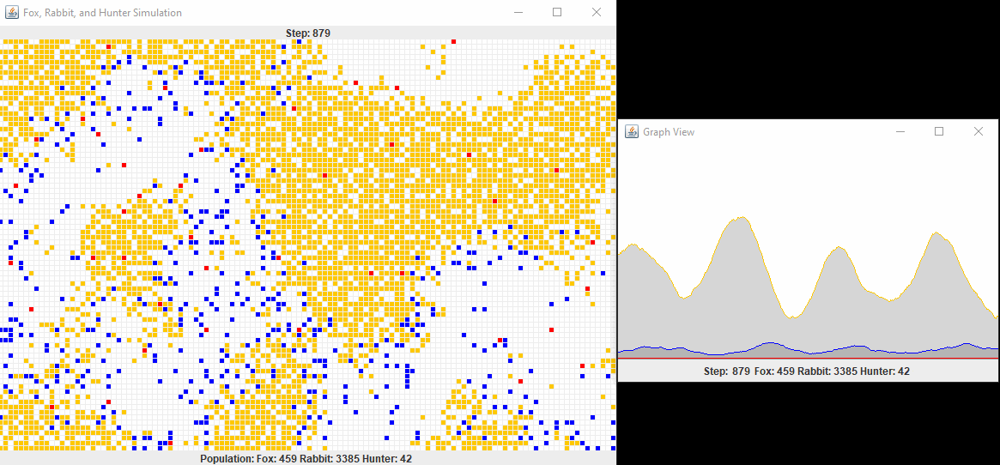
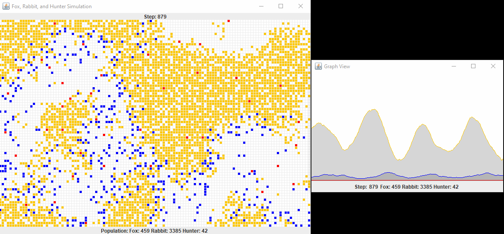

Latest Projects

Demolition Derby Game - Independent project where each player controls a car with one randomly getting assigned a transferrable bomb with a time limit and the goal of the game is to be the last car standing. Over the course of this project I learned how to implement multiplayer using a networking framework and gained experience using Remote Procedure Calls [RPCS], Events, and Object Synchronization across multiple clients. In the future I plan on adding deformable meshes on collisions and AI players. Click here for gameplay - [C#, Unity Engine, Blender, Photon Networking Framework]

"Would You Rather...?" Website - Final project for "Fundamentals of Web Design" course at TCNJ during the Fall 2019 semester. The website allows the user to play a game of would you rather, submit questions of their own, sort questions, and like/dislike/comment on questions. Click here to visit the website -[HTML, CSS, Javascript/JQuery, Brackets]
 
Hunter, Fox and Rabbit Population Simulation - Final project for "Objected-oriented Programming & Data Abstraction" course at Rowan College at Burlington County during the Spring 2019 semester. The program simulates the population of hunters, foxes, and rabbits in a 120x80 grid. Each "actor" in the simulation has specific actions such as moving, killing, eating, reproducing, and dying. -[Java, BlueJ Object-Oriented Programming IDE]

Hangman Game - Final project for "Machine and Assembly Language Programming" course at Rowan College at Burlington County during the Spring 2019 semester. The program allows the user to play a game of hangman, keeping track of the word to solve, previously guessed letters, and the body parts of the hangman. - [Assembly Language, Microsoft Macro Assembler(MASM)]
Contact Information
- Resume
> matthew-mabrey-resume-2020.pdf - Email
> mattmabrey1@gmail.com - Github
> https://github.com/mattmabrey1 - LinkedIn
> https://www.linkedin.com/in/matthewmabrey
Education
The College of New Jersey - Anticipated May 2021
Bachelors of Science, Computer Science
4.0/4.0 GPA
Rowan College at Burlington County - Summer 2019
Associates of Science, Computer Science
3.93/4.0 GPA
- Accelerated Computer Science I & II
- Calculus II & Analytic Geometry
- Computer
Architecture - Discrete Structures
& Mathematics - Analysis of
Algorithms - Fundamentals of Web Design
- Computer Programming & Problem Solving
- Artificial
Intelligence - Machine & Assembly Language
Programming - Object-oriented Programming & Data Abstraction
Research
Device Security - Comp. Sci. Undergraduate Research
Rowan College at Burlington County - Fall 2018
Worked with a group of fellow Computer Science
students to research consumer device security. My
section focused on comparing the malware and
virus vulnerabilties of popular mobile device
operating systems aswell as assessing the
security options currently available to
consumers.
Research Paper:
device-security-research.pdf
Skills
Languages
Strong with C++, C#, and Java
Proficient with Python, C, HTML, CSS, and Javascript
Beginner with SQL and PHP
Tools
Proficient with Microsoft Office Suite and Photoshop
Intermediate with Blender and Unity Engine